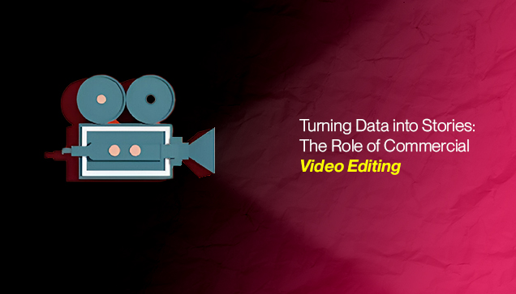

© Copyright 2022 © All Right Reserved.

For brands looking to make a splash nowadays mixing data smarts with creative flair is a must. Commercial video editing is key here turning plain stuff into awesome, memorable stories. This post covers how data guides video edits, looks at what's working best right now and stresses why good storytelling wins in ad campaigns.
Video editing's changed a lot! We've gone from straightforward stories to using data to make videos that actually get people to buy stuff and also enjoy watching. Now, editors can see analytics, audience info and what viewers do so they can make the story just right and really hit people's feelings. Basically, it's not just about knowing the editing software anymore, it's about using data to tell awesome stories. Moreover, videos that keep people interested can boost how long they stick around by like 80% ( Forbes ), way more than just plain pictures.
Video creation is heading towards using data to tell stories. Data-driven video means looking at stuff like when people stop watching and how much they're into it, and using that to make editing choices that viewers will actually like. There was this study that showed if you plan your videos well and check out the data first, you can get way more people to stick around like up to 42% more. When you really get data working for you, it can totally change how you make videos and make them a lot more interesting and successful.
You got to turn data into a story people actually want to watch. Editors can use stuff like who's watching and what they click on to figure out where to put the funny bits, the scary bits or the feels. This data's like a cheat sheet for making the video flow right, picking the right cuts and choosing music and pictures that hit the spot with your audience.
Before the first cut is made, successful projects begin with extensive data gathering. An effective pre-production phase involves:
Keeping viewers hooked in a video isn't just about lining up shots. It's about crafting an emotional journey. Editors actually look at things like where people are really paying attention and where they start to zone out – you know, heat maps and engagement stats. Apparently, loads of people dip out around the middle if the story's not grabbing them. To fix that, editors tweak the pace and throw in some cool stuff at just the right times to keep viewers interested and make the whole thing more impactful.
One of the strengths of digital video is its iterative nature. Post-production analysis—using analytics from platforms like YouTube or social media—offers clear insights into how the video performs. Feedback loops allow creators to:
This data-centric approach is often utilized by reputable service providers including leading video editing agencies and video production companies which underscore that continuous iteration is key to refining storytelling techniques.
Storytelling really makes or breaks commercial videos. Video editors can use their creativity and data smarts to craft stories viewers actually connect with. VMaker has an article that dives into different editing tricks - like color tweaks and music choice - that can turn an ad into something that really hits home. Storytelling makes brands feel more human, right? Data tells you what works but what about the editors? They're the ones who make it pop with their creative decisions and if you keep an eye on what users and customers are saying, you can make sure every tweak you make to the story is totally engaging and feels real.
Video is super effective for getting messages across because it really sticks with people. Studies show we remember way more from videos than just reading text. Moreover, there's so much video online these days which means video editors are totally shaping what we see and how we see it. As more and more videos get watched, we're gonna need more and more people who can make awesome visual stories.
Mixing analytics into how we tell stories has really changed the video world. Now, creators can see how well their videos are doing financially by using data right in the story. This helps them judge if a video worked and make smart choices about where to put their money. Furthermore, using analytics while editing ads makes them way better. Editors look at things like how interested people are and how long they watch to figure out what to change. This back-and-forth, data-based tweaking makes ads that really grab people and hit the mark with their audience.
Diving into detailed analytics for video editing really pays off in making commercial videos work better and the numbers totally show it.
Technology and art are coming together to totally change how videos are made. AI and machine learning are doing more than just the boring editing stuff; they're also figuring out what viewers might like based on data. AI tools can even check out faces and voices to make edits that really hit you emotionally. This whole tech thing is opening up all kinds of new ways to tell stories in commercial video editing.
Turns out putting AI into video editing can seriously speed things up to a staggering 35%. That means editors get to spend way less time on the grunt work and more time actually thinking up cool stories and planning out their projects. If you're doing video these days, you've got to jump on the tech bandwagon.
Video editors now employ VR and AR to craft immersive stories where viewers get to dive in and interact. Think of it as a choose-your-own-adventure but for video. This is all powered by live data, meaning the story actually changes based on what the audience does making for a super personal and ever-evolving viewing experience.
Everyone watches videos on all sorts of screens now. Thus, we have to make videos that look good everywhere. That means thinking about screen sizes and how people usually watch stuff on each device. Sometimes, we need to make different versions for different screen shapes like wide for TVs and tall for phones. We should also make sure the video quality is good enough but not so high that it lags on slower devices. If we do all this, everyone gets a great video experience no matter what device they're using to watch.
Digging into user data lets editors really dial in on personalized viewing. You can make profiles and tweak content so videos fit what each person likes. This means changing up stories, throwing in call-to-actions and even switching clip order. This keeps viewers hooked and gives creators and marketers awesome info to make their plans even better.
We're talking up to 28% better conversions with that engaging content. The bottom line is to get into video to boost sales and see real success. You'll need some new video skills and tools. Don't forget the analytics – track how it's all going, tweak your approach and make sure your campaigns are killer and your ROI is on point.
If your video is not ranked at the top of the webpage, it means that it doesn't exist to most people. Therefore, using SEO friendly headings, descriptions and keywords is very necessary to reach the right audience at the right time.
Incorporating analytics throughout the commercial video editing process from initial planning to final review has really changed things. The industry is now driven by data, allowing editors to create stories that are both visually appealing and strategically impactful. It's a game-changer for digital marketing.
Videos are a total game-changer for how we talk to people. Teaching, convincing, getting everyone hyped up – you name it. They're all about making connections, building trust and seriously boosting engagement by telling stories. It just makes everything way easier to understand and remember. Businesses are using video stories and they're hitting audiences right in the feels, building real trust and getting everyone on board. Videos break down language and culture barriers so they're a must-have for talking to the whole world.
Digital storytelling's potential is exploding as data and creativity team up. We've got tools now that track what viewers are doing live and editing can change on the fly which is changing how stories are told. Turning data into awesome stories with the latest tech is going to be key for communicating online, especially since brands are pouring money into this stuff.
Mixing creativity and data is going to completely change how we tell stories and get results. It's like diving into a whole new world of storytelling that's driven by data – it'll be tough but totally worth it. For those who are ready to jump in and lead the way, the sky's the limit! We, at Glocal Edit, are ready to break the sky as well. Partner with us and get the quality you had never imagined.
© Copyright 2022 © All Right Reserved.